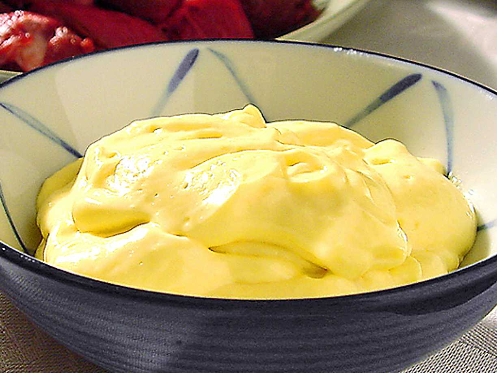

Aioli

Description
A simple way to make your own perfect aioli. Goes well with both Moules Frites and pizza crust. Boom
Ingredients
- Oil (rapeseed, olive, opinions differ. I usually go with rapeseed or sunflower. Or olive oil
- Salt - a pinch
- Egg yolks - maybe two. Depends on how much aioli you want
- Vinaegar or lemon juice. Or lime juice if you're trying to not upset any puritans.
Steps
- Mix yolks with acid of your choice (preferably not THAT kind of acid though)
- Chrush or finely chop garlic and mix into the... mix(?)
- Whip it while your pouring oil into it. A very very thin stream of oil. Super thin. Very important. Ask anyone
- Done. Taste with salt and black pepper
Back to main page